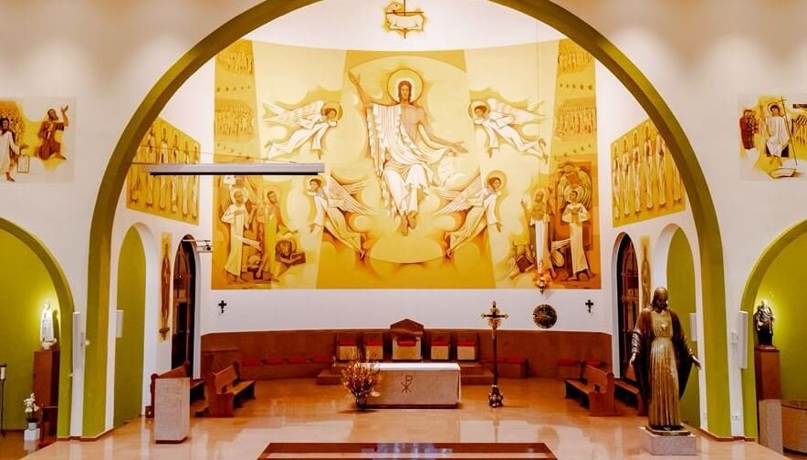
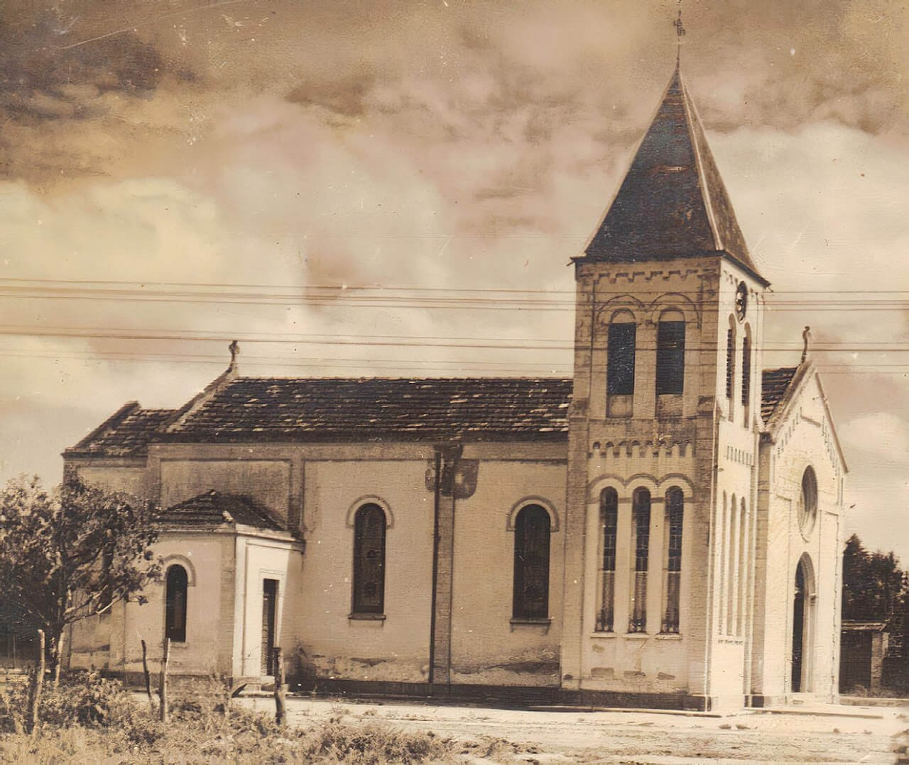
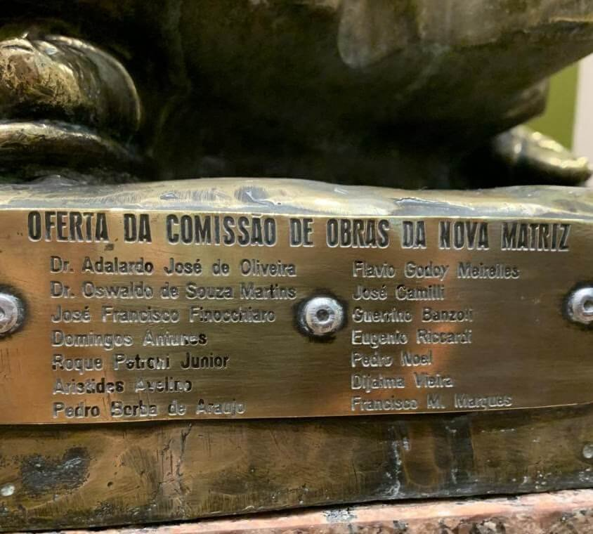
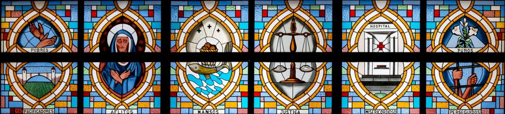
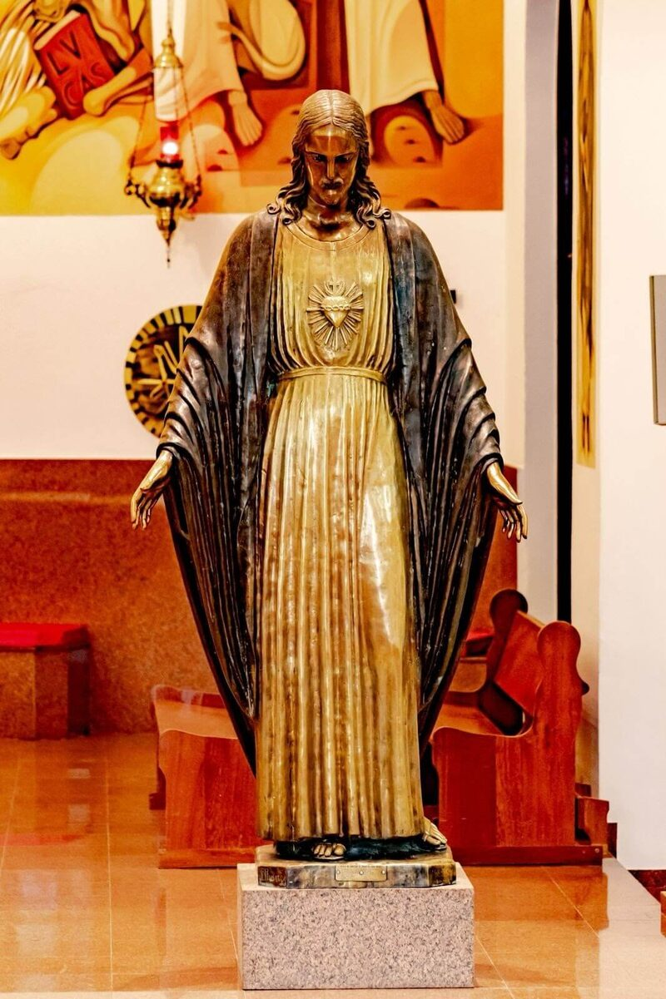

Missas
Agenda e horários da paróquia · consulta em 26/11/2026.
Uma igreja no Brooklin, da primeira capela à matriz da Avenida Morumbi.
Av. Morumbi, 8825 · São Paulo

Agenda e horários da paróquia · consulta em 26/11/2026.
Terça a sexta, às 9h e às 14h30, segundo a agenda paroquial.
A secretaria orienta sobre agendamento e mudanças em feriados.
Consulte a agenda da comunidade.
Pelo Batismo, nascemos para a vida em Cristo e passamos a fazer parte da Igreja (Mt 28,19; CIC 1213). Para batizar seu filho, pergunte à secretaria sobre a preparação de pais e padrinhos, os documentos e as datas.
No Matrimônio, os esposos batizados firmam uma aliança para toda a vida, elevada por Cristo à dignidade de sacramento (Mt 19,4–6; CIC 1601). Se vocês vão se casar na Igreja, a secretaria pode orientar sobre a preparação, as datas e os documentos.
Quando Julio Klaunig cedeu um terreno ao bairro, pensava-se em uma escola ou posto policial. Os moradores pediram uma igreja. Com trabalho, rifas e quermesses, ergueram a primeira capela.
A capela abriu em 27 de maio. O padre Geraldo de Proença Sigaud ia a pé celebrar a missa de domingo.
Dom Duarte Leopoldo e Silva criou a paróquia em 28 de junho. O primeiro vigário foi o padre Alberto Staub.
A pedra fundamental foi lançada na festa de Cristo Rei de 1954. Em março de 1956, a nova igreja foi aberta ao culto.
As famílias doaram a imagem de Cristo de braços abertos. A escultura de Francisco Busacca tem 2,50 metros e é revestida de bronze.




No coração humano de Jesus, a Igreja contempla o amor com que ele amou cada pessoa (CIC 478).
Jesus procurava um lugar de descanso com os discípulos. Ao encontrar o povo à espera, teve compaixão e começou a ensinar.
Como imitá-lo: Reserve tempo para escutar quem precisa falar, mesmo quando não estava nos seus planos.
Diante de Maria e dos que choravam a morte de Lázaro, Jesus também chorou.
Como imitá-lo: Faça companhia a quem perdeu alguém, sem exigir que a pessoa fale ou se console depressa.
Jesus se levantou da mesa, tomou uma toalha e lavou os pés dos discípulos.
Como imitá-lo: Assuma hoje uma tarefa de casa que costuma ficar para outra pessoa.
Terça a sexta, 7h30–12h e 13h–17h30.
Sábado, 8h–12h e 13h–17h.
Avenida Morumbi, 8825 · Brooklin, São Paulo